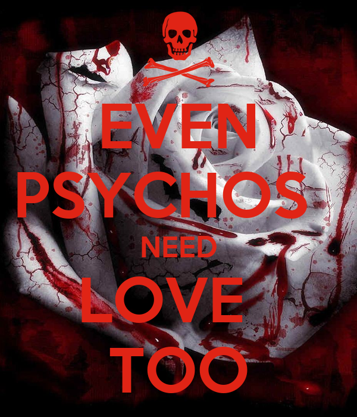
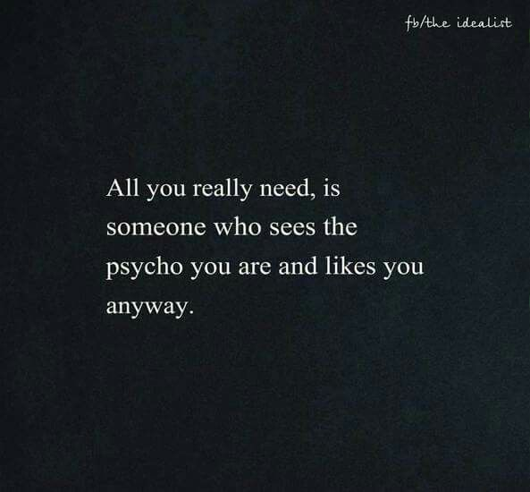
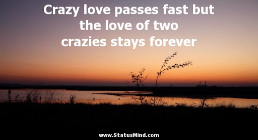
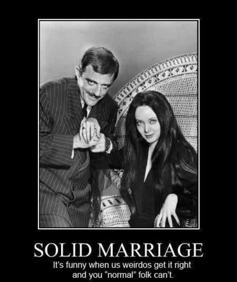

Welcome to Psycho Social!
Physcho Social is the #1 Dating site for those who can't seem to keep a partner from getting cold feet...quite literally. Do you struggle with abandonment and trust issues? Do your partners keep "disappearing" on you or run from your love? Do people call you "CRAZY" or a "PSYCHO" because you have so much passion for your lover? Well, Psycho Social is for you! We here at Psycho Social take pleasure in finding the perfect someone for people just like yourself. What about your history you say? Don't mind that! We match only those who would love you just the way you are! Everyone has a few skeletons in their closet.
Acceptance
True love is unconditional. Your partner should love you just the way you are. If you have a few bodies in the freezer...who cares?! They'll help you move them, no questions asked. That's love.
 Seek acceptance...Passion meets insanity
People mistake infatuation for love. Infatuation wants romance now! Love knows there's romance in the day to day killings. It's easy to let the passion die when you lose that spark for what you love. Share your passions with the one you love and paint the town in red!
 Seek passion...Testimonials
We here at Psycho Social have brought all sorts of people together. Read our testimonials for yourself. We believe like minded weirdos belong together. We all need a partner in crime.
 Seek true love